Valex - Admin Panel CodeIgniter template
Introduction
Welcome to Valex - Admin Panel CodeIgniter template
Valex is a responsive HTML based CodeIgniter template, With these template formats,
it's very easy to
create
a presence and grab someone's attention around the web page
because the template is built using HTML5, CSS3, Bootstrap 4 framework and with
Sass.
So
please before you start working with the template take a quick look on the
documentation.
So that you can easily built your website.
If You Love Our Template Design Please don't forget to rate it. Thank you so much! 😊
Dashboard
Welcome to Valex - Admin Panel CodeIgniter template
- Created Date: 29/04/2021
- Author: Sprukosoft
- Company: Spruko Technologies Private Limited
- Support: support@spruko.com
Thank you for purchasing our admin template. Feel free to contact us any time. We have a best dedicated team to provide you the best support. If you have any queries please contact us through live chat or email:- sprukotechnologies@gmail.com
Template Description
Valex - Admin Panel CodeIgniter template. It includes 90+ PHP Pages, 70+ Plugins, UI elements and contains 36 different types of versions, different Styles of Widgets etc. This template is “User Friendly” and it is designed in such a way that you can easily understand the code and can modify the template. The template contains advanced Form-Elements like Date pickers, Select2, Multi Select etc. This template is 100% Premium Admin Templates. This template is designed using Bootstrap 4 framework, HTML5, CSS3, Jquery.
It has clean, flat user interface design, easily customizable components and widgets. The Template comes with an unique design also we ensure you that you can easily design your admin template.
It’s fully responsive layout for all types of devices. It work’s on all major web browsers, Desktop, iPhone, iPad, Tablet and all other smart devices.
Once you Purchase the Valex - Admin Panel CodeIgniter template you’ll be getting all the HTML5, CSS3, Scss & JS files and you are enabled to get free downloads of all the future updates.
Main Features
- 36 Different Types Of Versions
- 90+ PHP Pages
- Bootstrap 4 Responsive Framework
- Well Commented Code
- 24 * 7 Professional Company Support
- Regular Updates
- 70+ Plugins
- 6 types of Charts
- Select2
- Mail Inbox
- 9 Types of Icons
- File upload
- Form Elements
- Form Editor
- Form Wizard
- Sweet Alerts
- Data Tables
- Lockscreen Page
- Error Page
- Under Construction Page
- User Profile
- Easy to customize
- More Widgets
- Invoice Page
- Pricing Tables
- Very Easy to Create your Own Site
- Neat, clean and simple design
- W3C Validated
Minimum Requirements
- PHP = 7.4 or Newer
- CodeIgniter = 4.1.1
- *intl* Extension
- PDO PHP Extension
- Mbstring PHP Extension
- Tokenizer PHP Extension
- XML PHP Extension
- JSON PHP Extension
Installation Process of Composer
Note: The clear documentation of PDF is given on How To Run CodeIgniter Project In Localhost - For Beginners. Please Check out the PDF before running the project.
In order to run CodeIgniter we need to install composer by the following steps
Steps to Download & Installation of Composer
Step1: Please visite the Official Web Site of the Composer www.getcomposer.org
Step2: Click on the Download option
Step3: Click on the Composer-Setup.exe you are done with download
Step4: Now Right click on the Composer-Setup.exe file and select Run as administrator click on Yes
Step5: You'll be getting two options click as per your choice
Step6: I choose Recommended option here and if your developer you can check the box of the Developer Mode
Step7: And click on the Next button please make sure of installation path and then click Next
Step8: You'll be asked to enter proxy url please skip the step and click on the Next button
Step9: Please make sure with the PHP Version it should not be less than 7.3 V, here we used 8.0 Version and then click on the next button
Step10: To confirm that Composer is installed in your system then type Composer in command prompt (if you are using XAMPP then go to C:\xampp\htdocs location and type composer)
How to replace Layouts of 36 Versions
Note: Please make sure with the Base_url while you are running your project.
Check out the folder structure of the Layout Versions
├── app/
| ├── Config
| ├── Controllers
| | ├── BaseController.php
| | ├── Home.php
| | └── Pages.php
| ├── Database
| ├── Filters
| ├── Helpers
| ├── Language
| ├── Libraries
| ├── Models
| ├── ThirdParty
| ├── Views/
| | ├── errors
| | ├── layout
| | | ├── layoutsections
| | | ├── versions
| | | ├── custommain.php
| | | ├── footer.php
| | | ├── main.php
| | | └── sidebar-right.php
| | └── pages
| | └── 90+.php (files)
| ├── .htaccess
| └── Common.php
├── public
Procedure to convert into 36 different types versions for LTR & RTL
- Hereby default Vertical Menu is activated
- For example, if you want to convert Vertical Menu into Horizontal Menu
- Go to your project root path Example: myproject/app/Views/layouts/main.php and /custommain.php
- Now open those two main.php and custommain.php file in your editor. It will look something like this as shown below.
- The main.php file contains main pages content and the custommain.php file contains custom pages content.
- First, you need commenton the previous version code and then you can activate your version.
- To comment on your previous version code you just need to add this
<?php //to your previous version code as shown below. <?php //<?=$this->include('layouts/versions/leftmenu-icon/light');?>- Now to un-comment the code as shown in the above picture to activate Horizontal Menu or any other version, you need to remove this
<?php //acording to your version. - Once you un-comment the code
<?=$this->include('layouts/versions/horizontal/light');?>now you are sucessfully activated Horizontal Menu as per the example given. - Similarly repeat the above process to activate remaining versions.
Note: You can activate only one version, you cannot activate multiple versions at a time.
SCSS & CSS
Valex comes with power of SCSS. The css files can be generated from scss by simply following below steps:
- Gulp
Gulp is a JavaScipt streaming task runner. It automate many development tasks. Using gulp you can perform tasks like running a local server, minifying code, compilation, Browser sync ,optimizing images, etc... We are using gulp which allows to easily compilation of scss to csss. You can read it more about it here.
Prerequisites
Please follow below steps to install and setup all prerequisites:
- Nodejs
Make sure to have the Node.js installed & running in your computer. If you already have installed nodejs on your computer, you can skip this step, otherwise install nodejs on your computer,
Use
npm install init -ycommand to generate packages.json file - Gulp
Make sure to have the Gulp installed & running in your computer. If you already have installed gulp on your computer, you can skip this step. In order to install, just run command
npm install -g gulpfrom your terminal. After Completion of gulp Install. open
gulpfile.jsAnd install the "Declartion of gulp variables" in your command promt. In order to install, just run commandnpm install gulp,npm install gulp-sass,
npm install gulp-postcss,npm install autoprefixer,npm install gulp-sourcemaps,
npm install browser-sync,
npm install gulp-cssbeautify,
npm install gulp-beautifyfrom your terminal.Make sure to have all above prerequisites installed & running in your computer. If you want install more variables for your template, just declare the variables in
gulpfile.jsafter that run in command promt
Installation
To setup, follow below mentioned steps:
- Install Prerequisites
Make sure to have all above prerequisites installed & running in your computer
- Install Dependencies
Open your terminal, go to your folder and enter the command
npm install. This would install all required dependencies innode_modulesfolder.
After you finished with above steps, you can run the command to compile scss into css:
gulp
SCSS & CSS
Here we provided the packages.json and gulpfile.js files in your project you just need to run npm install in your terminal at your project root path.
After compilation of download, you can compile your SCSS & CSS files by following the below procedure.
| Command | Description |
|---|---|
gulp
|
Runs the project locally, starts the development server and watches for any changes in your code, including your html, javascript, sass, etc. The development server is accessible at http://localhost:3000. |
gulp watch
|
In this template gulp watch command is for what ever changes made in scss folder, will watch and run an appropriate task.
All the CSS files under assets/css/ folder will be watched and upon changes made to these files, the styles task will be executed.
|
gulp dark
|
In this template gulp dark command is for what ever changes that are made in style-dark.scss will be watched and the changes automatically updated in style-dark.css file in css folder.
|
gulp menu
|
In this template gulp menu command is for what ever changes are made in sidemenu.scss will be watched and the changes automatically updated in sidemenu.css file in css folder.
|
gulp skin
|
In this template gulp skin command is for what ever changes are made in skin-modes.scss will be watched and the changes automatically updated in skin-modes.css file in css folder.
|
gulp boxed
|
In this template gulp boxed command is for what ever changes are made in boxed.scss will be watched and the changes automatically updated in boxed.css file in css folder.
|
gulp dark-boxed
|
In this template gulp dark-boxed command is for what ever changes are made in dark-boxed.scss will be watched and the changes automatically updated in dark-boxed.css file in css folder.
|
gulp closed-menu
|
In this template gulp closed-menu command is for what ever changes are made in closed-sidemenu.scss will be watched and the changes automatically updated in closed-sidemenu.css file in css folder.
|
gulp menu-text
|
In this template gulp menu-text command is for what ever changes are made in sidemenu1.scss will be watched and the changes automatically updated in sidemenu1.css file in css folder.
|
gulp menu-hover
|
In this template gulp menu-hover command is for what ever changes are made in sidemenu3.scss will be watched and the changes automatically updated in sidemenu3.css file in css folder.
|
gulp menu-hover1
|
In this template gulp menu-hover1 command is for what ever changes are made in sidemenu4.scss will be watched and the changes automatically updated in sidemenu4.css file in css folder.
|
gulp toggle-menu
|
In this template gulp toggle-menu command is for what ever changes are made in sidemenu-responsive-tabs.scss will be watched and the changes automatically updated in sidemenu-responsive-tabs.css file in css folder.
|
SCSS-rtl & CSS-rtl
| Command | Description |
|---|---|
gulp
|
Runs the project locally, starts the development server and watches for any changes in your code, including your html, javascript, sass, etc. The development server is accessible at http://localhost:3000. |
gulp watch-rtl
|
In this template gulp watch-rtl command is for what ever changes made in scss folder, will watch and run an appropriate task.
All the CSS files under assets/css-rtl/ folder will be watched and upon changes made to these files, the styles task will be executed.
|
gulp dark-rtl
|
In this template gulp dark-rtl command is for what ever changes that are made in style-dark.scss will be watched and the changes automatically updated in style-dark.css file in css folder.
|
gulp menu-rtl
|
In this template gulp menu-rtl command is for what ever changes are made in sidemenu.scss will be watched and the changes automatically updated in sidemenu.css file in css folder.
|
gulp skin-rtl
|
In this template gulp skin-rtl command is for what ever changes are made in skin-modes.scss will be watched and the changes automatically updated in skin-modes.css file in css folder.
|
gulp boxed-rtl
|
In this template gulp boxed-rtl command is for what ever changes are made in boxed.scss will be watched and the changes automatically updated in boxed.css file in css folder.
|
gulp dark-boxed-rtl
|
In this template gulp dark-boxed-rtl command is for what ever changes are made in dark-boxed.scss will be watched and the changes automatically updated in dark-boxed.css file in css folder.
|
gulp closed-menu-rtl
|
In this template gulp closed-menu-rtl command is for what ever changes are made in closed-sidemenu.scss will be watched and the changes automatically updated in closed-sidemenu.css file in css folder.
|
gulp menu-text-rtl
|
In this template gulp menu-text-rtl command is for what ever changes are made in sidemenu1.scss will be watched and the changes automatically updated in sidemenu1.css file in css folder.
|
gulp menu-hover-rtl
|
In this template gulp menu-hover-rtl command is for what ever changes are made in sidemenu3.scss will be watched and the changes automatically updated in sidemenu3.css file in css folder.
|
gulp menu-hover1-rtl
|
In this template gulp menu-hover1-rtl command is for what ever changes are made in sidemenu4.scss will be watched and the changes automatically updated in sidemenu4.css file in css folder.
|
gulp toggle-menu-rtl
|
In this template gulp toggle-menu-rtl command is for what ever changes are made in sidemenu-responsive-tabs.scss will be watched and the changes automatically updated in sidemenu-responsive-tabs.css file in css folder.
|
INSTALLATION PROCESS OF CodeIgniter
Here we are using "Composer" to download "CodeIgniter" packages
Note : This installation is shown based on XAMPP server..
- Open command prompt, find the path of your XAMPP that is installed in your system.
- Set your path as (Example: C:\xampp\htdocs>) in command prompt.
- Now type the following command line to install the CodeIgniter Packages in your "htdocs" folder composer create-project codeigniter4/appstarter my-project and press Enter.
- Now your downloading is started please wait for sometime to download all the necessary dependencies and packages.
- Once you are redirected to the Token (hidden):_ path then you are sucessfully installed CodeIgniter
- You can also download the CodeIgniter framework using this link https://codeigniter.com/download // Optional: If you want to asscess your index.php file from your root directory.
- Once the framework is downloaded you need to make a small changes in index.php file that is located in your public folder.
- Take a copy of index.php file and paste it in your root folder that is out
of your public folder and open it in your editor and replace the code
$pathsPath = realpath(FCPATH . '../app/Config/Paths.php');to$pathsPath = realpath(FCPATH . 'app/Config/Paths.php');
Step:8
Note : If you any further queries in installation please refer to the official websites Click here
After installation run following command to get CodeIgniter development server
"php spark serve" or "php -S localhost:8080"Note :
Please make sure with your "public $baseURL" (Set
your "public $baseURL" according to your root path)
In your root directory
app/config/app.php open app.php in your editor and set the url
Example: public $baseURL = 'http://localhost:8080';
Installation Instructions For both CPANEL’S and FTP
Installation Instructions
Upload the Project that you have purchased in below directory based on your server
In FTP
Path: public_html/
Set your baseURL in /app config/app.php file Example: public $baseURL = 'website.com/myprojectfolder';
Go to browser and type the url followed by your project folder name Example: website.com/myprojectfolder
In cPanel:
Repeat the same process for cPanel
Inside File manager -> Path: public_html/
Set your baseURL in /app config/app.php file Example: public $baseURL = 'website.com/myprojectfolder';
How to Run CodeIgniter Project in localhost
If you have installed XAMPP on your machine then please follow the below steps
Step:1 Quick view of Installations
1. Download and Install the Composer from official site https://getcomposer.org/
2. Install CodeIgniter by using Composer as mentioned in the installation process above.
Step:2 Run project
1. After installing your CodeIgniter, Open Xampp and click on the start button on the Apache server and MySQL server
2. Extract the zip file of CodeIgniter project that you received.
3. Please set your public $baseURL before going to run your project, go to /app/Config/app.php Example: public $baseURL = 'http://localhost:8080'; and set your project path in command prompt.
4. If your project is placed in Local Server, Example: C:\xampp\htdocs\myprojectfolder
5. If your project is placed in Desktop, Example: cd C:\Users\Admin\Desktop\myprojectfolder
6. Now run the command line: "php spark serve" or "php -S localhost:8080"
7. Your CodeIgniter PHP Development Server as been started (http://localhost:8080)
8. Copy the url and past it in your favorite browser
Version
- PHP : "^8.0",
- Composer : "^2.0.12",
- CodeIgniter/framework : "^4.1.1",
Folder Structure
├── app/
| ├── Config
| ├── Controllers
| ├── Database
| ├── Filters
| ├── Helpers
| ├── Language
| ├── Libraries
| ├── Models
| ├── ThirdParty
| ├── Views/
| | ├── errors
| | ├── layout
| | | ├── layoutsections
| | | ├── versions
| | | ├── custommain.php
| | | ├── footer.php
| | | ├── main.php
| | | └── sidebar-right.php
| | └── pages
| | └── 90+.php (files)
├── public/
| ├── assets
| ├── .htaccess
| ├── favicon
| ├── index.php
| └── robots.txt
├── system/
| ├── API
| ├── Autoloader
| ├── Validation
| ├── Modules
| ├── View
| ├── index.html
| └── Model.php
├── writable/
| ├── cache
| ├── debugbar
| ├── logs
| ├── session
| ├── uploads
| └── .htaccess
├── .gitignore
├── .htaccess
├── composer.json
├── env
├── index.php
├── license.txt
├── phpunit.xml.dist
├── README.md
└── spark
Layout Options
How to Change Font Style ?
Step 1:
Go To _fonts.scss (assets/scss/custom/fonts/_fonts.scss )
if you want to change another font-family Go to the site Google Fonts And Slect One font Family and import In to style.css file
How to Select font Family
Example:
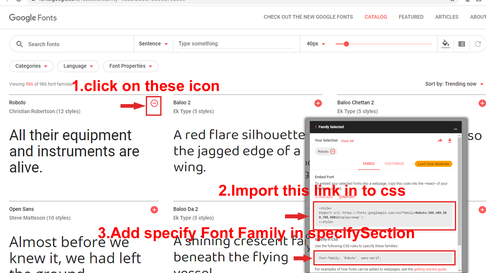
Step 2:
And paste Your Selected font-family in _fonts.scss
Example:

How to Change Logo ?
Go To "assets/images/brand" folder and replace your logo with Previous Logos within in image size. note: Please don't increase logo sizes. Replace your logo within given image size. otherwise the logo will not fit in particular place it disturbs the template design.
How to Change Leftmenu dark (light theme)?
open custom.js file go to skins section.. and remove comments for leftmenu-dark to enable leftmenu dark style as shown in below image
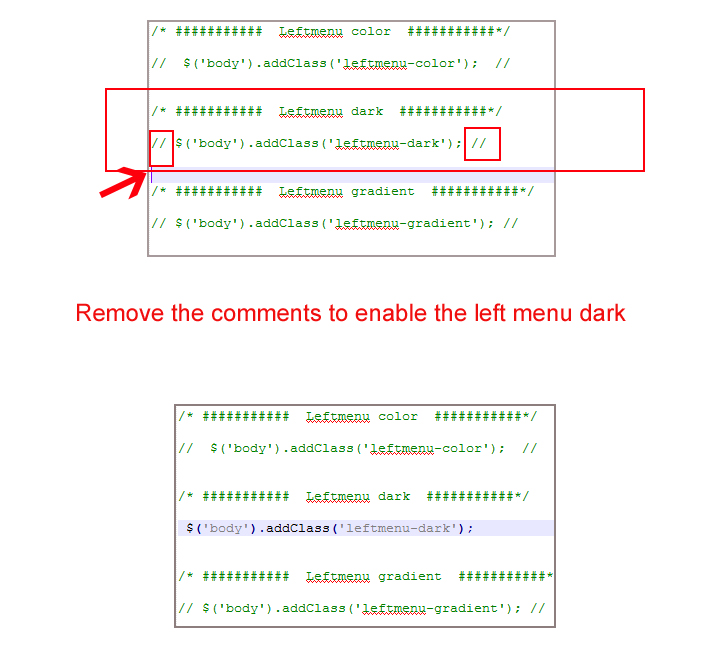
How to Change Leftmenu color (light & dark themes)?
open custom.js file go to skins section.. and remove comments for leftmenu-color to enable leftmenu color style as shown in below image
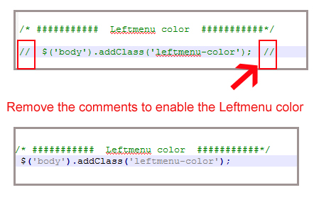
How to Change Leftmenu gradient (light & dark themes)?
open custom.js file go to skins section.. and remove comments for leftmenu-gradient to enable leftmenu gradient style as shown in below image
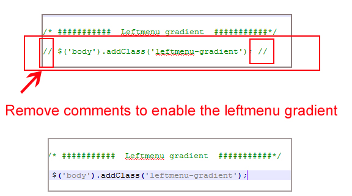
How to Change Light Leftmenu background images (light & dark themes) ?
open custom.js file go to skins section.. and remove comments for leftbgimage1 to enable leftbgimage1 style as shown in below image
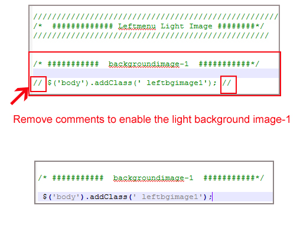
Similarly you can enable any Light Leftmenu background image by removing comments from leftbgimage1 to leftbgimage5 .
NOTE: while you are enabling one you must disable remaining leftbgimages
EXample : i choose leftbgimage1 for my template ,i dont want that image i want to change leftbgimage1 to leftbgimage2 . so i enabled leftbgimage2 by removing comments and disabled leftbgimage1 by adding comments as shown below image.

How to Change Leftmenu light in dark theme ?
open custom.js file go to skins section.. and remove comments for leftmenu-light to enable leftmenu-light as shown in below image
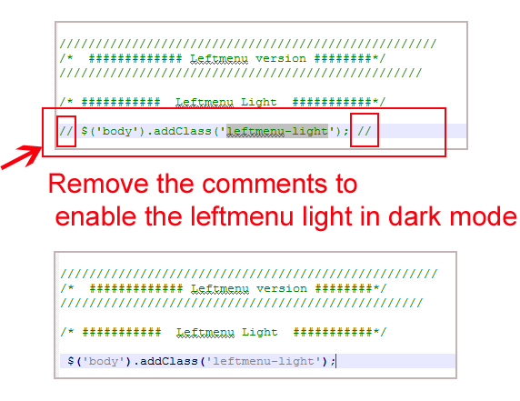
How to Change Body style 1 ? (Leftmenu & horizontal in both(dark-light versions))
open custom.js file go to skins section.. and remove comments for body-style1 to enable body-style1 as shown in below image
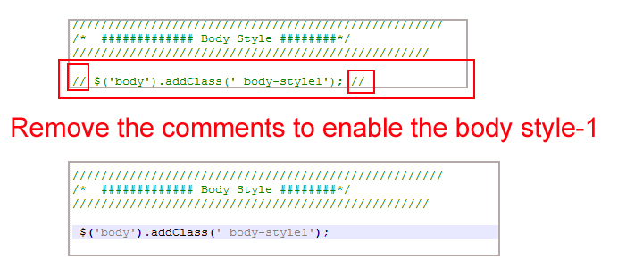
How to Change Horizontal light in dark theme ?
open custom.js file go to skins section.. and remove comments for horizontal-light to enable horizontal-light as shown in below image
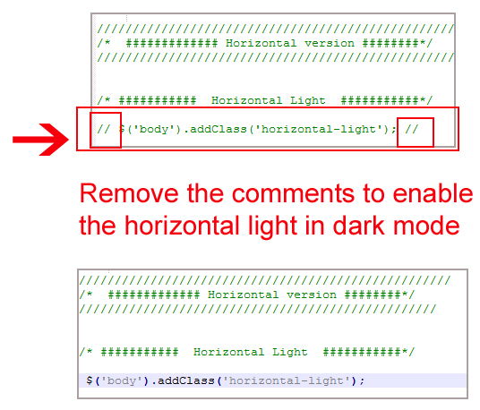
How to Change Horizontal color in both dark & light themes ?
open custom.js file go to skins section.. and remove comments for horizontal-color to enable horizontal-color as shown in below image

How to Change Horizontal dark in light theme ?
open custom.js file go to skins section.. and remove comments for horizontal-dark to enable horizontal-dark as shown in below image
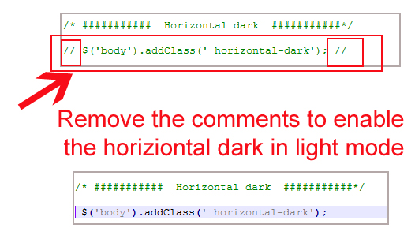
How to Change Horizontal gradient in both dark & light themes ?
open custom.js file go to skins section.. and remove comments for horizontal-gradient to enable horizontal-gradient as shown in below image
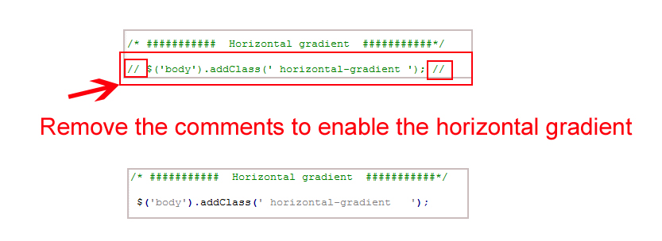
How to enable leftmenu-light with images (light & dark themes) ?
open custom.js file go to skins section.. and remove comments for leftmenu-light and remove the commets for your choosen image as shown in below image
Similarly you can enable Leftmenu-light with any image form leftbgimage1 - leftbgimage5 .
NOTE: while you are enabling one you must disable remaining leftbgimages
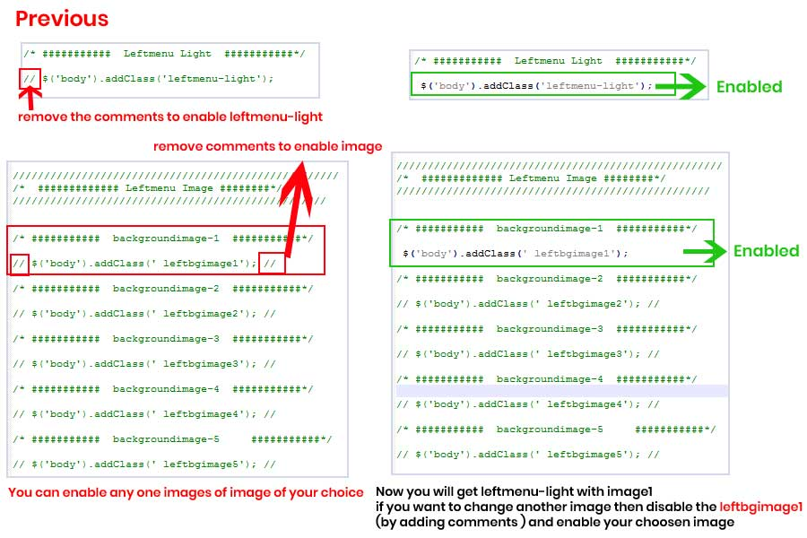
How to enable leftmenu-color with image (light & dark themes) ?
open custom.js file go to skins section.. and remove comments for leftmenu-color and remove the commets for your choosen image as shown in below image
Similarly you can enable leftmenu-color with any image form leftbgimage1 - leftbgimage5 .
NOTE: while you are enabling one you must disable remaining leftbgimages
How to enable leftmenu-dark with image (light themes) ?
open custom.js file go to skins section.. and remove comments for leftmenu-dark and remove the commets for your choosen image as shown in below image
Similarly you can enable leftmenu-color with any image form leftbgimage1 - leftbgimage5 .
NOTE: while you are enabling one you must disable remaining leftbgimages
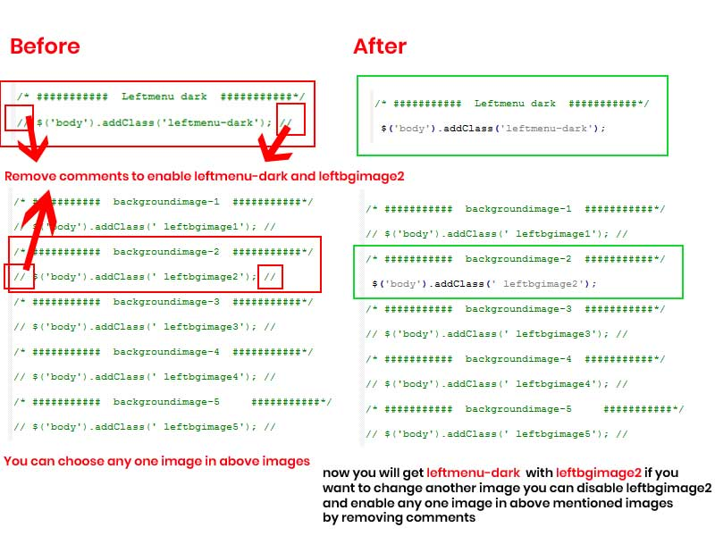
How to enable leftmenu-gradient with image (light & dark themes) ?
open custom.js file go to skins section.. and remove comments for leftmenu-gradient and remove the commets for your choosen image as shown in below image
Similarly you can enable leftmenu-color with any image form leftbgimage1 - leftbgimage5 .
NOTE: while you are enabling one you must disable remaining leftbgimages

How to Change valex leftmenu icons (light & dark themes) ?
In this template we used Material icon You can downlaod and use for your template
Material icon link
https://material.io/resources/icons/?style=twotoneFollow the below step
- Step:1 open Above link
- Step:2 select any icon from list of icons
- Step:3 download svg
- Step:4 open svg in notepad++ or any other code editor copy the code and paste the code where ever you want
example
Here i downloaded check_circle svg icon, and I copied the svg code as shown below
class="side-menu__icon"
AFTER
here i delete width and height and added class to svg icon
like that you can download any icon from the given ink and remove the height and width to that svg icon and add class="side-menu__icon" for svg icon
How to Add new html file or rename html file in Leftmenu-Toggle menus?
If you had changed HTML file names then you should be given the link in HTML pages
for example : If I changed index.html into index5.html
open all HTML pages and change the link index.html to index5.html as shown below
or if you want to add new page example: xyz.html this xyz.html link should be given in all left menu and left menu dark HTML pages
and that link you want to place in elements section then go to near
and goto the links and add this xyz.html link in
elements section as shown below
Elements
Alerts xyz like this add your new link in all html pagesfor every tab, we had given name related to that tab so that you can easily find out section , and go to that particular section and add your new link
for example:for ecommerce :
for apps :
for advanced :
Sources
- Bootstrap FrameWork
- https://getbootstrap.com/
- Jquery
- https://jquery.com/
- Jquery Datepicker
- https://jqueryui.com/datepicker/
- Full Calendar
- https://fullcalendar.io/
- File Uploads
- https://www.jqueryscript.net/demo/jQuery-Plugin-To-Beautify-File-Inputs-with-Custom-Styles-Dropify/
- mcustomScrollbar
- http://manos.malihu.gr/jquery-custom-content-scroller/
- Select2
- https://select2.org/
- Jquery Timepicker
- https://jonthornton.github.io/jquery-timepicker/
- Bootstrap-wizard
- http://vinceg.github.io/twitter-bootstrap-wizard/
- Datatable
- https://datatables.net/examples/styling/bootstrap4
- Font Awesome Icons
- https://fontawesome.com/
- Material Design Icons
- https://materialdesignicons.com/
- Simpleline Icons
- https://iconify.design/icon-sets/simple-line-icons/
- Ionicons
- https://ionicons.com/
- Themify Icons
- https://themify.me/themify-icons
- Bootstrap-Colorpicker
- https://farbelous.io/bootstrap-colorpicker/v2/
- Sparkline Charts
- https://omnipotent.net/jquery.sparkline/#s-about
- Echart
- https://ecomfe.github.io/echarts-examples/public/documentation.html
- Morris Chart
- https://morrisjs.github.io/morris.js/
Font Used
Google fonts are used in the template. They are as follows: Google Fonts
All Images are used: Pexels.com